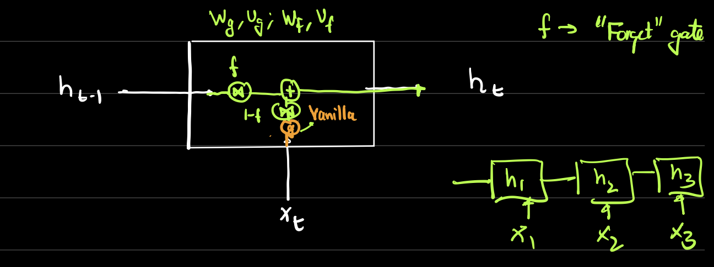
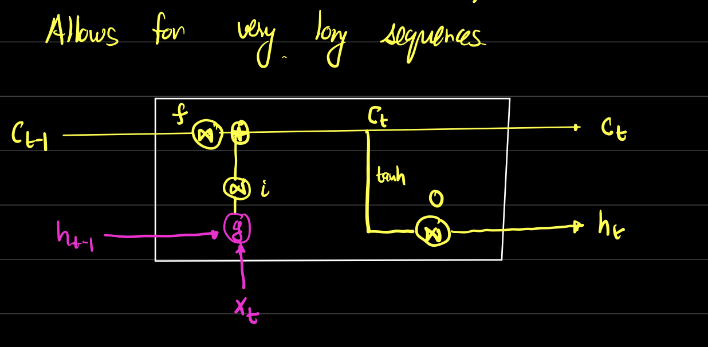

Chapter 2: Recurrent Neural Networks
Intro to Recurrent Neural Networks
Sequential Data Processing:
RNNs are designed to handle sequential data like time series, text, and speech.
Idea:
- Weight sharing across time
- Reduce number of parameters
- Capture temporal dependencies
 Types of RNN:
Types of RNN:
 Vanilla RNN:
Vanilla RNN:
 Vanilla RNN Summary Equations:
Vanilla RNN Summary Equations:
 Alternate Vanilla RNN Architecture:
Alternate Vanilla RNN Architecture:

 Simplified GRU:
Simplified GRU:

Notes
There is no memory cell in Vanilla RNNs, which makes them less effective for capturing long-term dependencies.
Fixing the architecture to include memory cells, as seen in LSTMs and GRUs, helps mitigate this issue.
Gated Recurrent Units (GRU)
Motivation:
GRUs were introduced to address the vanishing gradient problem in traditional RNNs.
They use gating mechanisms to control the flow of information, allowing the network to retain relevant information over longer sequences.
GRU Architecture:
Long Short-Term Memory (LSTM)
Motivation:
LSTMs were developed to overcome the limitations of traditional RNNs in capturing long-term dependencies.
They introduce a memory cell and gating mechanisms to regulate the flow of information, enabling the network to retain important information over extended sequences.
LSTM Architecture:
